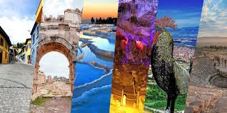

Şehir Hakkında
Nüfus: Yaklaşık 1.050.000
Denizli, Türkiye'nin bir sanayi, ihracat ve ticaret merkezi olduğu kadar, her yıl milyonlarca yerli ve yabancı turisti ağırlayan dünyaca ünlü turizm destinasyonlarına da ev sahipliği yapmaktadır.
Şehrin Gururu: Denizlispor
Denizlispor Kulübü
- Kuruluş: 1966
- Renkler: Yeşil - Siyah
- Lakap: Horozlar
- Branş: Futbol, Basketbol, Voleybol
1966 yılında kurulan Denizlispor, Türk futbolunda köklü bir geçmişe sahiptir. UEFA Kupası'nda Türkiye'yi başarıyla temsil etmiş, "Horoz" simgesiyle özdeşleşmiş bir kulüptür.